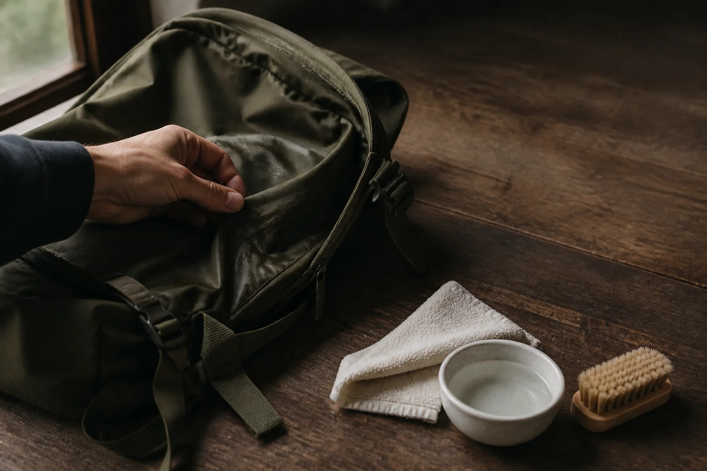

소재 이름 다음에 읽을 백팩 관리 표시

백팩의 소재를 확인하면 나일론이나 폴리에스터처럼 익숙한 이름을 만날 수 있습니다. 그러나 그 이름 하나가 완성된 가방의 세탁 방법을 모두 알려주지는 않습니다. 겉감과 안쪽 면, 여밈과 장식이 함께 있는 물건이기 때문입니다. 표면의 먼지를 정리할 때와 얼룩을 처리할 때 필요한 조건도 다릅니다. 소재 정보는 제품을 읽는 출발점으로 두고 실제 관리 표시와 현재 남은 흔적을 함께 보는 편이 관리할 범위를 정하기 쉽습니다.
가방을 비운 뒤 라벨과 제품 안내에서 세탁과 건조에 관한 내용을 찾습니다. 금지하거나 허용한 방법이 있는지 읽고 확인할 수 없는 부분은 문의할 정보로 남깁니다. 라벨이 없다는 이유로 일반적인 원단 관리법을 그대로 적용하지 않습니다. 가방의 어느 면을 관리하려는지 먼저 알아두면 제품 모델과 현재 상태를 함께 전달하기 쉽습니다. 안내를 찾기 위해 물건을 비우는 과정에서 개인 소지품과 분리 가능한 물건도 실제 구조에 따라 정리하면 됩니다.
같은 표면에 보이는 다른 흔적
가방 표면에 무엇이 남았는지 세 경우로 나누어볼 수 있습니다. 선반에서 꺼낸 뒤 먼지가 얹힌 경우, 음료가 닿은 한쪽에 흔적이 있는 경우, 비를 맞아 여러 면에 물기가 있는 경우입니다. 먼지만 있는 날에는 물을 사용하는 작업이 필요한지부터 판단하고, 한 곳의 흔적은 범위를 좁혀봅니다. 젖은 상태라면 내용물을 꺼내 각각의 물건을 먼저 구분합니다. 같은 가방이라도 현재 상태가 다르면 시작할 작업이 달라지므로 소재 이름 다음에 이 상태를 적어두면 좋습니다.
겉면에 장식이나 다른 색의 면이 함께 있다면 작업의 경계를 읽을 수 있습니다. 예를 들어 본체 아래쪽에 흔적이 있고 그 옆에 금속 부품이 있다고 가정해봅니다. 본체의 한 면만 처리하려는지, 부품 가까이까지 범위가 이어지는지를 먼저 봅니다. 이런 차이는 관리 표시에서 어느 부위에 관한 정보를 찾아야 하는지 알려줍니다. 전체 가방을 한 재료로 생각하지 않으면 문의할 때에도 본체 바닥과 장식 주변을 다른 사진으로 설명할 수 있습니다.
작업 자리를 정할 때는 꺼낸 소지품과 관리 도구를 다른 면에 놓습니다. 물병과 지갑이 가방 옆에 남아 있으면 천을 움직이는 동안 다시 닿을 수 있습니다. 현재 관리할 부위만 보이는 방향으로 가방을 놓고, 나머지 면은 자연스러운 형태로 남깁니다. 어느 위치에서 시작했는지 알 수 있게 하면 중간에 멈추었다가 다시 상태를 보기 쉽습니다. 제품이 허용한 마른 정리로 끝낼 수 있는 날에는 그 범위를 마친 뒤 새 작업을 덧붙이지 않고 남은 흔적부터 봅니다.
이번 표면 관리의 제품 예시로 Himawari No.0514 제품 정보를 참고할 수 있습니다. 제품 이름과 소재 정보가 있다면 실제 가방의 라벨에 적힌 내용과 대조하는 방식입니다. 관리할 면의 사진과 제품 정보를 함께 준비하면 문의할 범위가 분명해집니다. 같은 모델 이름이라도 옵션과 실제 제품 안내를 확인하고 현재 가진 가방의 표시를 우선 읽습니다. 제품을 선택할 때에도 앞으로 어떤 관리가 필요한지 물을 수 있는 자료가 됩니다.
부분 관리가 허용된 경우
제품에서 물이나 특정 세정제를 사용할 수 있다고 안내한다면 적용할 부위와 방법을 함께 읽습니다. 사용 가능하다는 한 문장만 보고 가방 전체를 같은 방식으로 처리하지 않습니다. 작은 면을 시험하라는 지침이 있다면 그 범위에서 상태를 보고, 색이나 표면이 달라지면 넓혀 진행하지 않습니다. 어느 제품과 방법을 사용했는지 구분할 수 있어야 이후 문의에서도 현재 조건을 설명할 수 있습니다. 안내된 양과 적용 방법은 함께 확인할 부분입니다.
부분 관리를 시작하기 전과 마친 뒤의 면을 같은 조명에서 볼 수 있습니다. 한쪽만 밝은 창가에서 보고 다른 쪽을 어두운 방에서 보면 무엇이 달라졌는지 판단하기 어렵습니다. 작은 시험이 허용된 제품이라면 시험 위치를 본인이 알아볼 수 있게 기억하고 그 면의 결과를 봅니다. 도구와 방법을 동시에 바꾸기보다 사용한 것이 무엇인지 남겨두면 상담할 때 설명할 조건이 줄어듭니다. 눈에 보이는 변화가 불분명하면 작업 범위를 넓히는 결정을 잠시 남겨둘 수 있습니다.
문제가 생긴 용기나 포장은 가방과 따로 봅니다. 같은 자리에 작은 로션 용기를 넣었고 그 주변에 흔적이 있었다면 뚜껑과 겉면의 상태를 살펴볼 수 있습니다. 가방의 얼룩을 처리하는 것과 다음 외출의 배치를 정하는 것은 다른 작업입니다. 용기를 별도 묶음으로 둘지, 다른 운반 형태가 필요한지는 실제 취급 정보와 닫힘에서 판단합니다. 어떤 물건이 어느 면에 놓였는지 알면 가방 표면만 계속 관리하는 대신 일상 짐의 접촉 위치도 바꿀 수 있습니다.
건조까지 포함한 관리 안내
수분을 사용하는 방법이라면 건조 단계도 함께 확인합니다. 입구와 안쪽 면을 어떤 상태로 둘지, 사용할 수 있는 건조 방식이 무엇인지 제품 표시에서 읽습니다. 겉면을 만져본 결과만으로 접힌 안쪽까지 같은 상태라고 판단하지 않습니다. 소지품을 넣기 전에 관리한 면과 주변을 다시 살펴보세요. 말리는 자리를 고를 때에도 가방에 다른 물건이 눌리거나 끈이 걸리는 조건이 없는지 봅니다. 안내된 방법과 실제 놓인 상태가 이어져야 합니다.
정리가 끝나면 사용했던 도구와 꺼낸 소지품을 각각 회수합니다. 개인 용기에 문제가 있었던 경우에는 그 물건의 상태도 해당 안내에 따라 확인해야 합니다. 가방 표면만 처리하고 같은 용기를 되담기보다 현재 닫힘과 운반 조건을 다시 살피는 것입니다. 다음 외출에서 새 종이나 옷을 넣을 예정이라면 관리했던 면에 남은 것이 있는지도 확인합니다. 처리한 상태를 기록했다면 같은 흔적이 다시 보일 때 이전 조건과 대조할 수 있습니다.
관리 기록은 길지 않아도 됩니다. 가방 바닥 오른쪽의 흔적, 사용한 천과 세정 제품의 이름, 작업 뒤 남은 상태처럼 다음에 다시 읽을 수 있는 정보를 남깁니다. 원인이 확실하지 않으면 추측을 적기보다 해당 면의 사진을 두면 됩니다. 다른 가방을 새로 쓸 때에는 이 기록을 처리법의 정답으로 적용하지 않고 그 제품 표시를 새로 읽습니다. 같은 소재 이름이 있어도 현재 완성된 물건의 관리 조건이 기준입니다. 이번 작업에서 무엇을 했는지 알면 다음에는 같은 처리를 무심코 반복하지 않아도 됩니다.